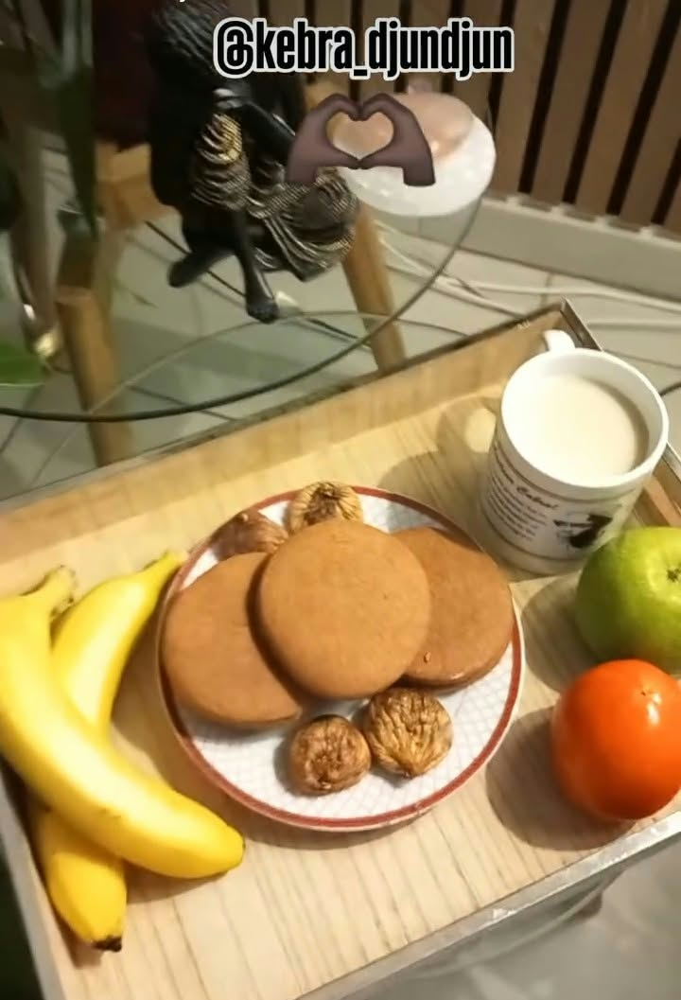
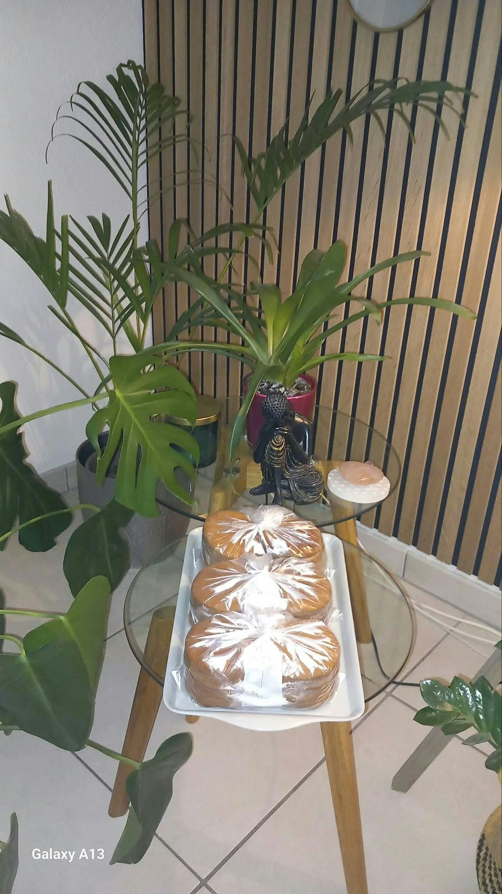

Kebra-Djundjun
Bolachas Artesanais de Cabo Verde
🇨🇻 Autenticidade Garantida
Bolachas Artesanais de Cabo Verde
Receita familiar guardada a sete chaves, moldada à mão com ingredientes puros. Uma textura estaladiça que derrete na boca e desperta memórias das ilhas — entregue fresca em toda a Suíça.
Ingredientes rigorosamente selecionados: zero lactose, zero glúten e zero açúcar refinado, mantendo todo o sabor nobre e autêntico do arquipélago.
Mãos experientes moldam cada bolacha seguindo a tradição ancestral transmitida de geração em geração em Cabo Verde.
Cozedura lenta e cuidadosa para garantir a textura crocante irresistível e o aroma quente que reconforta a alma.
Imagine o estalar suave da bolacha Kebra-Djundjun ao mergulhar num café espresso acabado de tirar ou num chá quente aromático. Leveza, pureza e prazer sem culpa a qualquer hora do dia.
Misture livremente as suas variedades favoritas • 12 CHF por saco
Ainda não adicionou bolachas. Escolha acima entre Normal (INKA / Branca) ou Natural (ETA / Preta).




Veja os bastidores da confeção artesanal, novidades e fornadas frescas no nosso Instagram e TikTok oficiais.